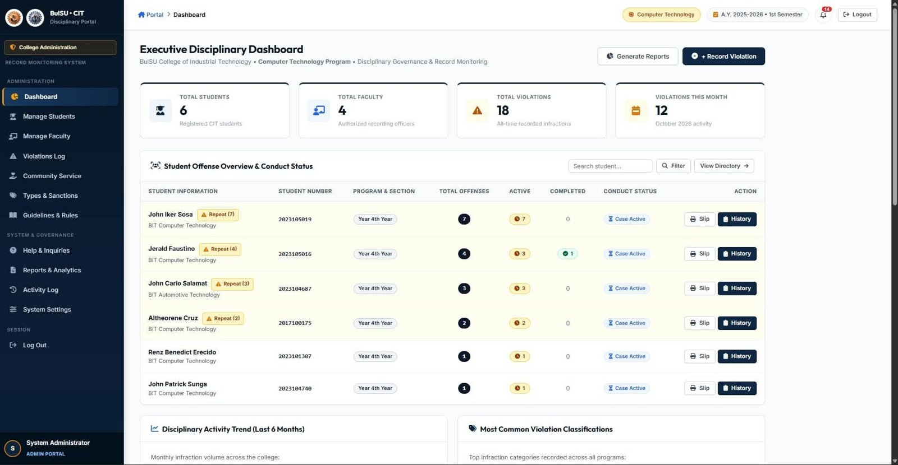
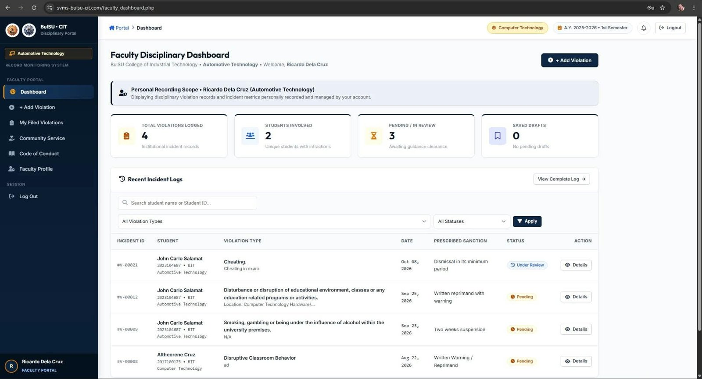

Available Starting 2nd Semester A.Y. 2026–2027
Jerald G. Faustino
Junior Front-End Web Developer Intern
I build clean, responsive websites and ship them fast with AI-assisted development. Looking for an OJT team where I can contribute from day one.
Training hours0 / 500 hrs
Target training hours rendered toward the OJT requirement.
About me
I'm a fourth-year student at the College of Industrial Technology who turns ideas into working, mobile-friendly web pages quickly. I stay disciplined with deadlines and document what I build. I want to help a partner company ship polished front-end features.
Academic background
- Program
- Bachelor of Industrial Technology
- Major
- Computer Technology
- Institution
- Bulacan State University – College of Industrial Technology
- Expected graduation
- 2027
Core competencies
- Rapid AI-assisted prototyping
- Responsive debugging across devices
- Clear technical documentation
- Version control basics with Git
Technical skills
Tools & platforms
Design & digital media
Industrial & technical foundations
Featured projects

Student Violation and Record Monitoring: Admin Dashboard
Front-End Web Developer
Tracking student violations by hand made it hard to apply sanctions fairly. This system lets administrators insert, manage and monitor violation records, with sanctions based on severity and on how many times a student repeats the same violation. I built the front-end and prototyped the wireframes in Figma.

Student Violation and Record Monitoring: Faculty Dashboard
Front-End Web Developer
Faculty needed a quick way to file incidents and follow their status. This portal lets them record violations, search and filter incident logs, and see the prescribed sanction and review status for each case. I designed and coded the front-end screens, with Figma wireframes.
Interested in bringing me onto your team for OJT? Let's connect.
Email me- EmailJerald Faustino
- LinkedInJerald Faustino
- GitHubJerald Faustino
- Preferred setupMalolos / Bulacan / Metro Manila / Remote